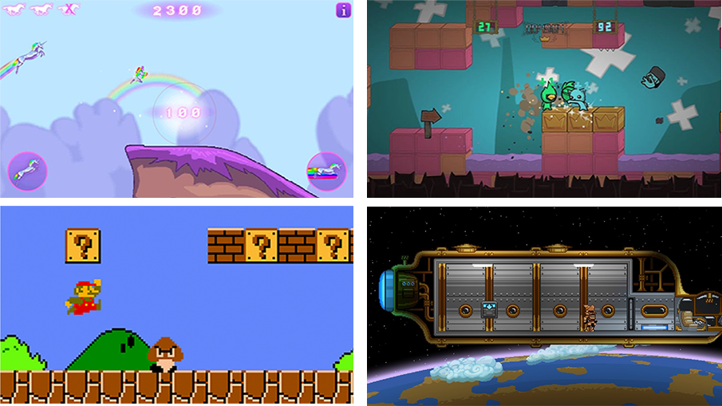
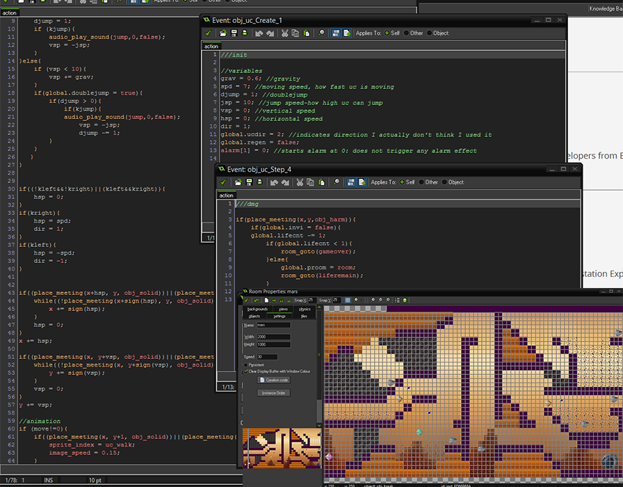
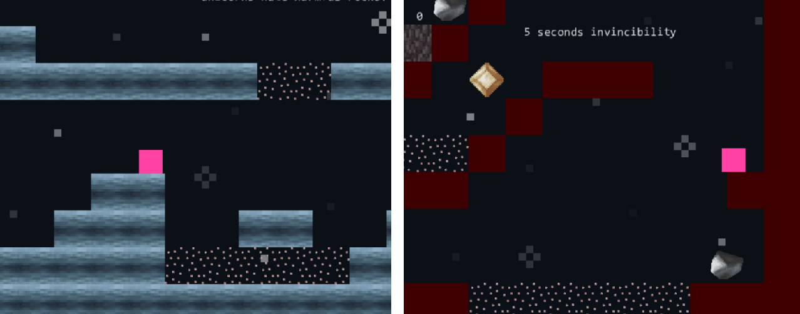
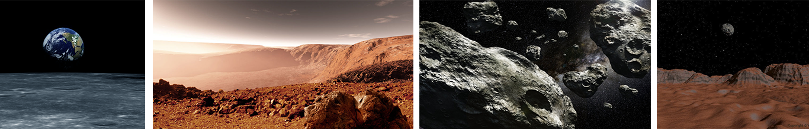
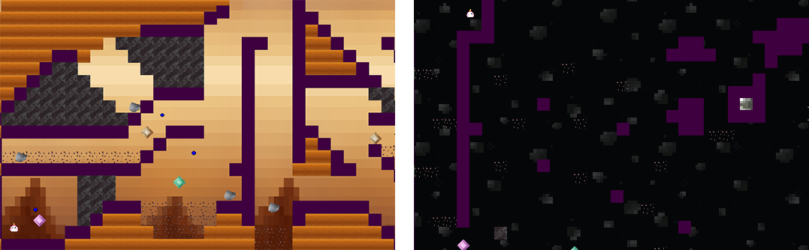
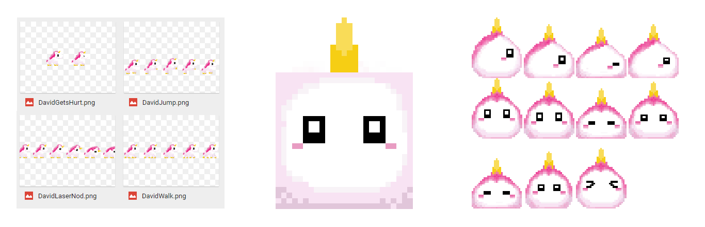
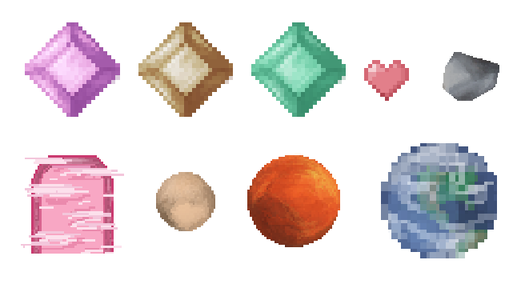
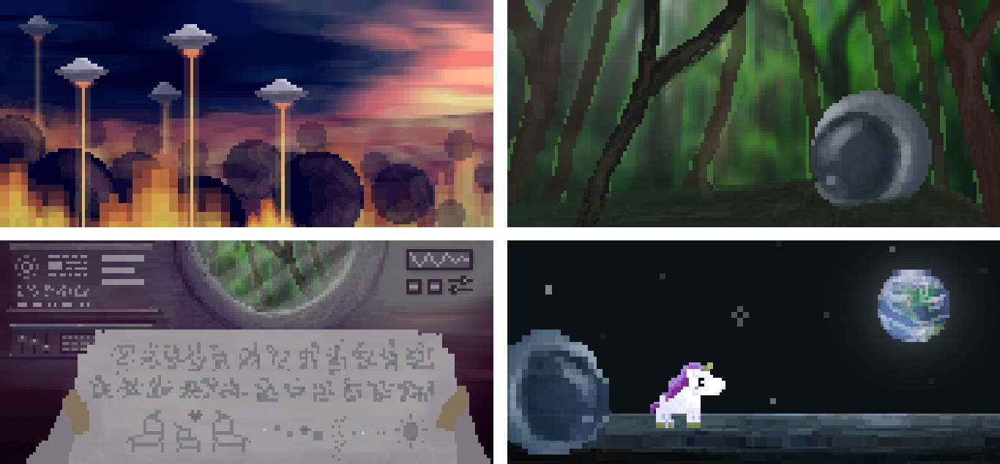
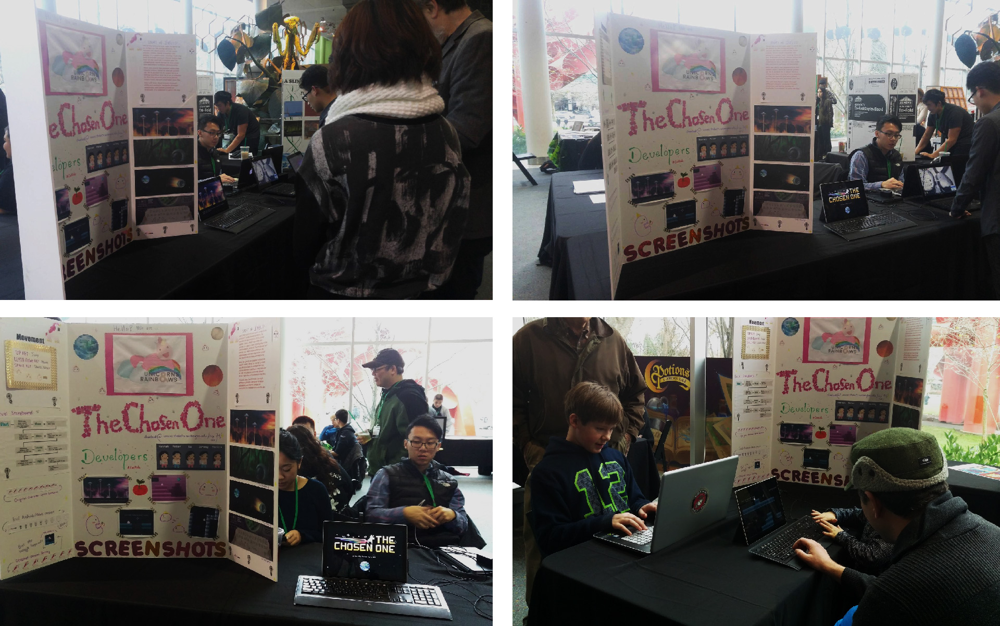
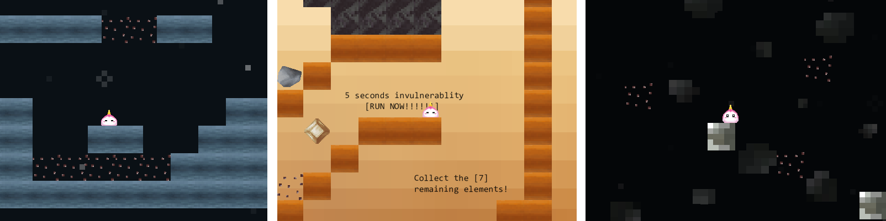

"The Chosen One" is a 2D Platformer Side Scroller game. The story of the game revolves around a unicorn name David, who is exploring the Solar System in order to find his way back to his home planet.
Group Project
My Role:Game Programming
Level Design
Cutscenes
GUI
Animations
Music
Game/Team Website
Create an educational and interactive game based on the December theme of Pacific Science Center: "play, exploration and mystery".
Our team name is "Unicorns & Rainbows", so *surprisingly* we decided to make a game based on a unicorn character. In the beginning, we see an "educational game" as a game that gives off educational facts and information, so we planned on incorporating astronomical facts. The first idea of our game is about an Unicorn exploring the planets in the universe and learning the different properties of the planets.
We decided to incorporate the ideas of meaningful interactions as the educational part of our game. The purpose of meaning interactions is to engage the players to make choices, which lead them to make interactions with their thoughts, eventually the players will be able to build up their skills and knowledge through these interactions.
To move forward from the idea of "play, exploration and mystery", we decided to make our game an adventure/puzzle 2d platformer game. The game will require the players to think and react quickly. We researched on the platformer games such as "Unicorn Attack", "Battle Block Theater", "Super Mario" and "Starbound". These games have the similar mechanics like avoiding obstacles and going to certain locations to advance to the next level. Starbound has a theme of space traveling and gathering resources on different types of planets, which made a big inspiration to the theme of our game.
To program the game, I used "Game Maker Studio", it's a game programming software with a language similar to Java. I was actually pretty new to Game Maker Studio, it took me 4 hours just to figure out how to make the character move left, right and up/jump. After endless hours of studying I figured out the basics of the program, which allow me to create the essential funcitionalities of the game.
Based on the feedbacks from the play-testers, the game was in a pretty good start with an engaging narrative and interesting art style. The biggest probelm we were facing in the beginning is that our game was lacking a unique selling point. The game's first prototype only has movement, shooting and health/energy bars, which makes our game appear to be a generic and basic platformer.
User interaction is also part of the educational element of the game. Players will be ale to build up different types of skills passively through the gameplay experience. Therefore, the main gameplay mechanic is shifted from shooting enemies to solving problems. Instead of having the players to answer questions as the "problem solving" element, we created puzzles for the players to solve. The puzzles include jumping puzzles, avoiding obstacles and gathering objects. It challenges the players to find the way to solve the problems in order to beat the game.
There are total of four levels in the game: Moon, Mars, Asteroids, Pluto. The difficulty of the game will increase level by level.
Moon: a tutorial level that guide the player with the basic controls/mechanics of the game.
Mars: more difficult than previous level, introduces new mechanic: breaking wall with laser, collect elements and some minor jumping puzzles.
Asteroids: most difficult level in game, require a lot of jumping puzzle and avoiding harmful blocks.
Pluto: added a simple maze and also jumping puzzle that is easier than previous level.
The level layouts and environment art assetes are inspired by the characteristics of the planets in the Solar System. For example, on Mars, the layout is similar to a mountain. The color is also similar to the orange, red atmosphere of Mars. The asteroid level will be scattered platforms and mainly a jumping puzzle.
The first character sprites designed have actually caused many glitches due to collision problems. The unicorn will either get stucked in the wall or hanging on the edge of the platform block with its chin. Therefore, I worked with the character designer and recreated a new squishy unicorn blob.
The following are the in game assets I have created. Most of the art assets are made to match the pixel retro theme of the game.
I composed the original version of the two game soundtracks on the piano.
Since the title theme music is used for the opening cutscenes and ending cutscenes. I kept the title music the way it was as I recorded. The piano is more suitable and subtle to introduce the player to the game:
The gameplay music has a more lively theme. The piano version of the song was edited into a pixel game/retro style music to fit the pixel style of our game.
in game music: left - original version, right - edited version
The main goal of the cutscenes is to demonstrate the narrative of the game. The game will start with cutscenes introducing the backstory and end with cutscenes telling the ending of the story.
On December 11th, 2016, the game was presented in the Game Design Lab Event at Seattle Pacific Science Center along with other indie games. It was a very fun experience showcasing our game and watching others play testing our game. Even though some children were having troubles passing the levels, they were still very engaged in playing the game.
See the game design document here | Download the final build here
